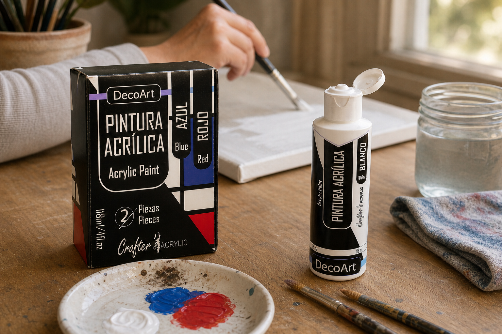
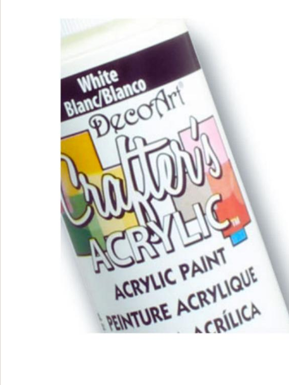
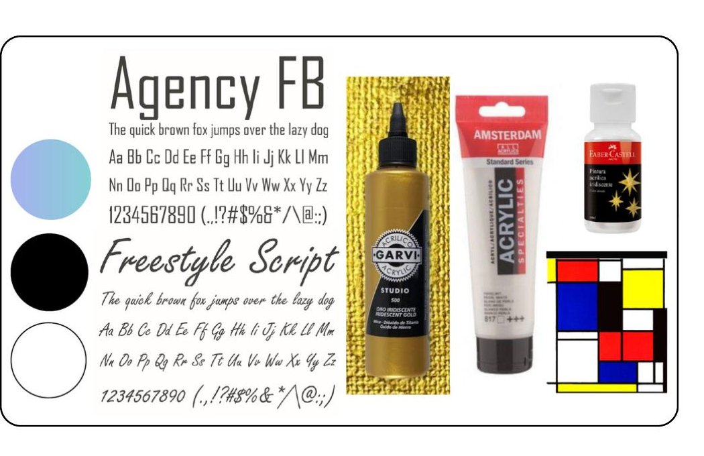
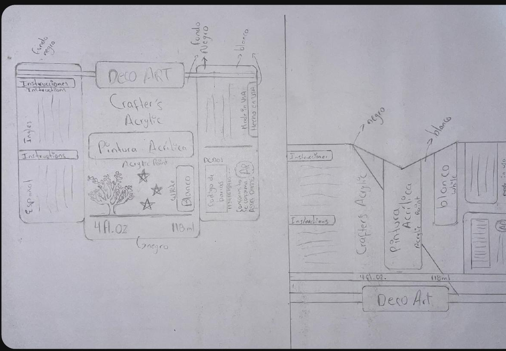
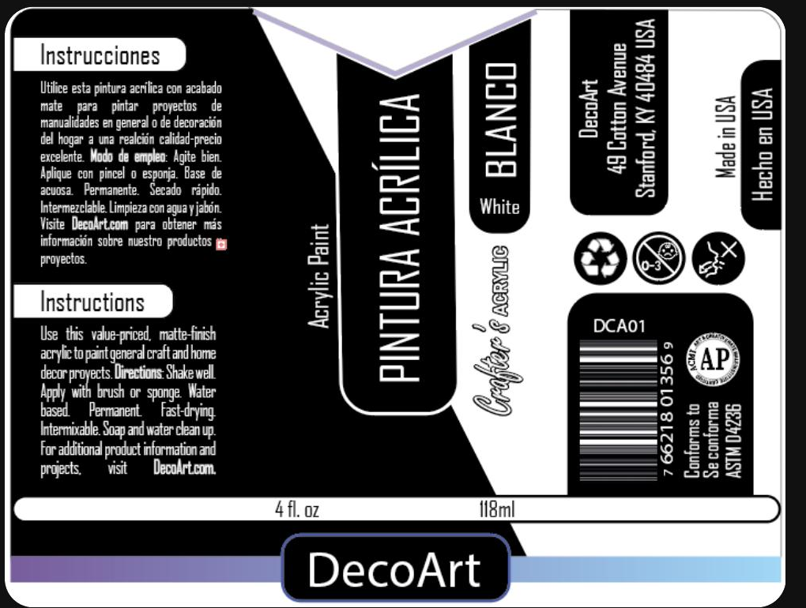
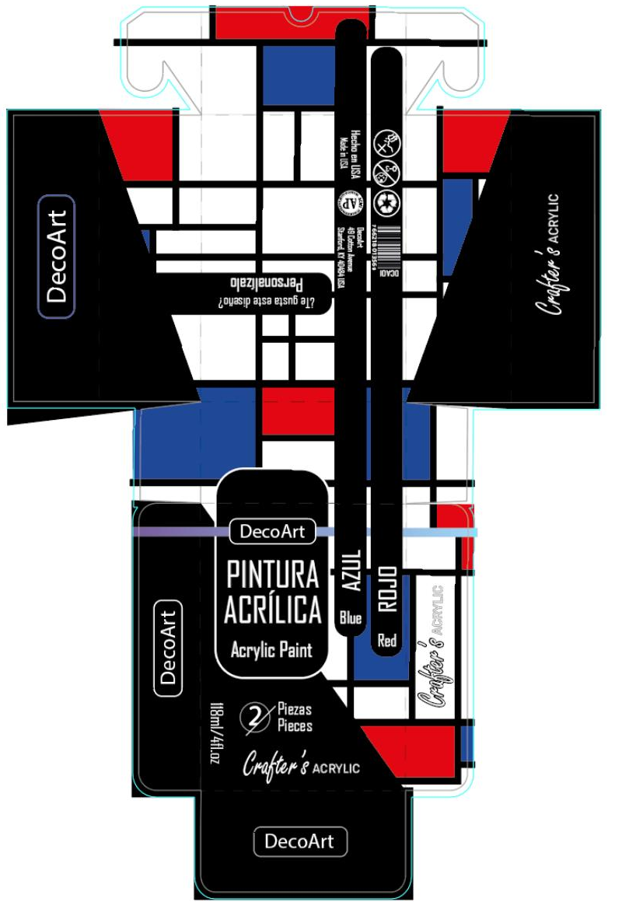

Contraste
Negro puro y blanco construyen una base contundente para ordenar toda la información.

Rediseño de etiqueta y empaque
01 · Contexto y reto
Una marca accesible con una identidad saturada.
Crafter's Acrylic es una pintura acrílica al agua de DecoArt dirigida a estudiantes y personas que empiezan a crear. El rediseño reorganiza una etiqueta cargada de mensajes para convertirla en una experiencia directa, bilingüe y fácil de reconocer.
El punto de partida
La propuesta debía simplificar la información, reforzar la jerarquía y diferenciar el producto en anaquel. El empaque secundario sumó una apertura visible y un segundo uso para acompañar el proceso creativo.

02 · Público objetivo
La línea acompaña a estudiantes, principiantes y niños desde los cinco años. Su facilidad de uso, secado rápido y desempeño sobre distintas superficies convierten al producto en una puerta de entrada al mundo de la pintura.
03 · Diagnóstico
04 · Dirección visual
Negro puro y blanco construyen una base contundente para ordenar toda la información.
Bloques, líneas y lectura horizontal permiten identificar cada dato con rapidez.
Rojo, azul, cian y violeta aportan energía sin competir con la estructura principal.
05 · Sistema visual

La tipografía condensada aporta estructura y máxima legibilidad. El trazo manual introduce la energía espontánea del proceso creativo sin alterar la jerarquía.
06 · Proceso

Las primeras pruebas definieron una lectura horizontal, una composición de alto contraste y una apertura superior que pudiera entenderse de inmediato.
La información se separó en bloques reconocibles. Las líneas blancas ordenan el recorrido y el color identifica las variantes sin perder la unidad.

07 · Propuesta final
El negro puro domina el sistema. La lectura horizontal, los bloques informativos y los acentos cromáticos permiten identificar el producto con rapidez en la botella y en la caja.

Resultado en contexto
La apertura tipo maletín facilita el acceso, protege el producto y transforma la caja rígida en un estuche reutilizable y personalizable.

Síntesis
La información esencial se reconoce primero y reduce el esfuerzo de lectura.
El formato tipo maletín hace visible el acceso y mejora la experiencia de uso.
La caja rígida se conserva como un estuche que puede reutilizarse y personalizarse.